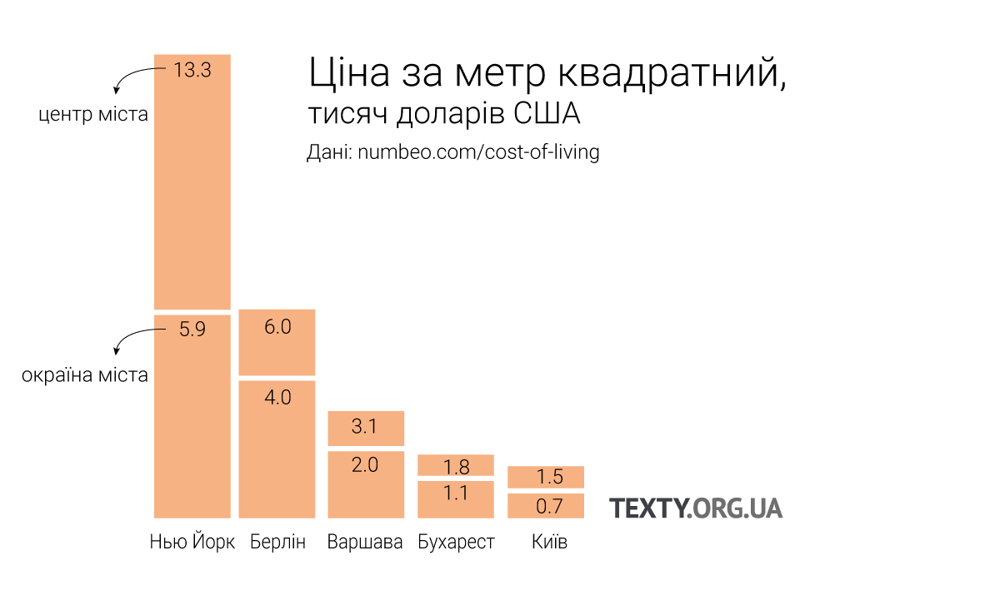
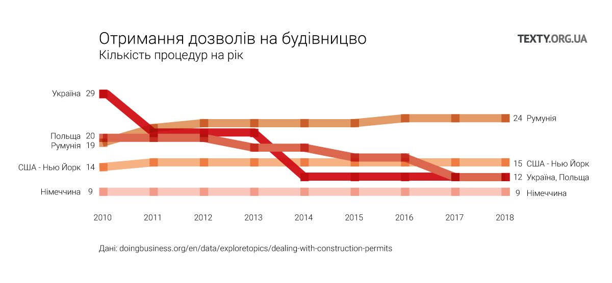

Перевага успішного міста – у спілкуванні. Ви вранці вийшли з дому і протягом дня мимохідь поговорили з багатьма цікавими людьми. Ці розмови надихнули вас на нову ідею, яка спала на думку перед сном. А гарні ідеї – це гроші. До того ж, людина – істота соціальна, і дружнє спілкування з іншими дає їй відчуття щастя. Тому “просунуті” міста, такі як Барселона, організовують свій простір таким чином, щоб люди більше спілкувалися.
Київ чимось схожий на Нью-Йорк кінця 19-го століття, коли місто будувалося без жодних обмежень. У нас теоретично є містобудівні правила і навіть Генплан, але на практиці – частково через корупцію, частково через слабку судову і правоохоронну системи – компанії будують там, де змогли вхопити ділянку. І зводять стільки поверхів, скільки зможуть. Адже собівартість метру у висотці менша, ніж в іншому житлі.
Зрештою, в Нью-Йорку запровадили купу різноманітних правил щодо того, як, де і що можна будувати, бо місто таки для людей, а не для прибутків продавців нерухомості. І тепер Нью-Йорк – це ніби Київ навиворіт. Відоме, як столиця хмарочосів, насправді місто високе лише в центрі. Щільно й високо забудували частину Мангеттену, а житлові квартали – переважно дво- або триповерхові.
Боротьба за обмежений простір
Як правило, у кожному мегаполісі є три групи, котрі постійно змагаються одна з одною, впливаючи таким чином на його розвиток.
Перша – це мешканці «з діда-прадіда»: вони мають тут нерухомість, часом і не одну, іноді її здають в оренду. Вони не дуже люблять «понаїхавших» і завжди проти нових будівництв. Для них, крім дискомфорту, це означає ще й зниження орендної плати.
Друга – це, власне, приїжджі. Міста в усьому світі ростуть, бо активніша економіка притягує десятки тисяч нових людей. Вони й створюють попит на нове житло, а будівельники правдами та неправдами його задовольняють. Є міста, де нових будинків майже не будують – приклад, про який багато пише світова преса, це Сан-Франциско. В результаті ціни на оренду житла надзвичайно високі, частина людей, котрі раніше орендували квартири, стали безхатьками, а на центральних вулицях міста, як пише The Economist, все більше людських екскрементів.
Третя сила – це міські активісти з лівим світоглядом, які борються проти забудови, за збереження парків, за пішохідні зони й інші вишеньки на торті міста. Суспільний простір для них важливіший, ніж розвиток бізнесу й задоволення попиту.
Всі ці групи є й у Києві. Та якщо в Сан-Франциско майже не будують, то в Києві немає такого місця, де не могло б початися будівництво, як правило, висотної багатоповерхівки. Це інша крайність.
Популярна нині містобудівна теорія переконує, що невисокі будинки зручніші для життя, ніж висотки. Оптимальна висота для людського комфорту – максимум сьомий поверх, звідки ще можна розгледіти силуети перехожих, впізнати знайомого. Урбаніст (фахівець, який займаються плануванням міст) Григорій Мельничук стверджує: “Що нижче живе людина, то більше шансів, що вона спілкуватиметься з сусідами й дбатиме про спільний простір унизу”. Детальніше про цей принцип читайте тут.
Вище 10-го поверху колір будинку починає змінюватися. Повні макети міст можна переглянути в кінці матеріалу

Київ. Найвища будівля на Кловському узвозі, 7. 47 поверхів, 168 м, 2012

Берлін. Park Inn by Radisson Berlin Alexanderplatz. 41 поверхи, 149.5 м, 1970

Мангеттен. Freedom Tower. 104 поверхи, 541.32 м , 2013

Варшава. Pałac Kultury i Nauki. 42 поверхи, 231 м, 1955

Бухарест. Floreasca City Center. 37 поверхи, 137 м, 2013

У висоту чи в ширину?
Подивіться на карту Києва – і ви побачите, що в адміністративних межах міста столиця має багато вільної землі й може розростатися в ширину, а не у висоту. Але це дорожче: нові шляхи, нові комунікації, довші лінії транспорту. Іноді – вирубка лісів. При такому розвитку нові квартири будуть дорожчими, ніж ті, які зараз пропонуються у висотках. З точки зору поточних витрат та економії ресурсів краще рости вгору. Але якщо ми дбаємо про приємне й комфортне місто для життя, яке приваблює таланти, то краще рости в ширину, хоч це й дорожче. Будь-який стартапер може мати однакові доходи і в Києві, й у Берліні – тож житиме там, де комфортніше. Та й дорожче житло, ймовірно, триматиметься в ціні чи дорожчатиме, а дешеве має шанси стати ще дешевшим.
Є теорія, яка переконує нас у тому, що багатоповерхові житлові квартали з часом ризикують перетворитися у небезпечні кримінальні гетто. Натомість правильно організований простір створює соціальні зв’язки, які сприяють адекватній поведінці.
Нинішні діти стануть дорослими, й так влаштоване життя, що частина з них не буде надто успішною в житті, сидітиме вдома, питиме, вживатиме наркотики та шастатиме дворами у спортивних штанах. Будинок великий, соціальних зв’язків між мешканцями немає, ніхто нікого не знає, гальм для хулігана не існує.
Григорій Мельничук пояснює: “У висотках, надто у спальних районах, власниками простору стають ті, хто не виїжджає щодня на роботу. Їх небагато, але достатньо, щоб сформувати вуличну банду. Людям, які провадять інший спосіб життя, стає некомфортно перебувати у спільному з ними просторі”.
Впливає також і планування будинку: навіть у висотках, де по 4-6 квартир на одному сходовому майданчику, менша вірогідність хуліганства – люди краще знайомі одне з одним.
Загалом, там, де мешканці менше спілкуються одне з одним, більша ймовірність різних злочинів.
Але перед купівлею помешкання люди здебільшого не читають містобудівні теорії, а з’ясовують ціну за квадратний метр житла. Дешевше – у висотках. За словами Антона Олійника, архітектора, який і проектує київські будинки, все, що потрібно забудовнику – це залити фундамент і штампувати поверхи за однаковими кресленнями.
Щоб перевірити як працює теорія, ми поїхали у два райони Києва з високими і низькими новобудовами.
Позняки
Висотка
Микола Іванович мешкає в одному з таких клонованих поверхів на Позняках, у новій і недорогій багатоповерхівці. Січневого пообіддя він вигулює у дворі свого будинку, що на Драгоманова 2б, йоркширського тер’єра Кулю. Заодно читає вивіски на аптеках і стоматологічних кабінетах, на перукарнях і кафе.
“Якщо постійно на таке дивитися, то можна подумати, що людина народилася, щоб підстригтися, поголитися, випити, закусити – та й померти”, – міркує чоловік.
Проте Микола Іванович, як колишній військовий, трохи поїздив “по всьому колишньому Союзу” і повернувся з переконанням: людина все-таки створена для чогось більшого. Для нього це “більше” означало, що треба забезпечити житлом дітей. Тому він продав отриману по службі трикімнатну квартиру на Борщагівці, купив по квартирі сину й дочці, а сам із дружиною переїхав на Позняки. Батьківську місію виконав, але сам залишився незадоволеним.
Досі в його голосі звучить легка туга, коли згадує про Борщагівку.
“Зелено, буйно, симпатичненько. Каштанів стільки, що Хрещатик позаздрить! А тут що? – змахує рукою. – Мегаполіс!”
З того, яким роздратованим тоном пан Микола це каже, зрозуміло, що мегаполіси він не любить. На його думку, вони спонукають до рутини й роблять людину заручником банків та аптек.
Чоловік охоче спілкується з сусідами, щоправда, звузив своє коло до людей зі схожими інтересами: тими, хто, як і він, тримає собак. Сусідів у Миколи – як населення райцентру, з усіма не перезнайомишся. Чоловік оселився тут, бо дешевше. Це головна і єдина причина.
Як колишній інженер-будівельник, Микола береться оцінити будинок професійним оком. Вердикт такий: нема архітектурної гармонії, будинки спроектовані так, що один затіняє інший, сонце не потрапляє у вікна. Якби його воля, він не будував би вище шістнадцятого поверху, але оскільки на те немає його волі, то Микола витирає лапи собаки Кулі і зникає за дверима квартири.
Архітектор Антон Олійник розуміє нарікання пана Миколи. Хмарочоси, каже він, незручні – й не лише тому, що їхнім мешканцям треба підготуватися до нескінченних сусідських ремонтів, гамору та вщерть запаркованих дворів. Що буде з висотками за п’ятдесят років?
“Традиційні будинки на Подолі можуть по п’ять разів за своє існування змінювати призначення. Хмарочоси – це як неповороткі машини для проживання, жодної іншої функції у них нема”, – каже Олійник.


Київ, вулиця Драгоманова 2б
Не треба багато спілкування
Для тридцятирічної Яни, фінансового аналітика в декретній відпустці родом із Житомира, ціна помешкання на Позняках переважила всі інші аргументи проти: 40 тисяч доларів за двокімнатну квартиру.
Обідньої пори жінка бавиться з дитиною на майданчику. Щоб погуляти в дворі, їй треба спускатися з 24-го поверху. Але Яна не бачить проблеми в тому, щоб жити високо й у багатолюдді. Якщо зламається один ліфт, є ще два. А серед людей легше залишитися непомітною.
“Ніхто не обговорює: куди ви пішли, з ким. Набагато вільніше почуваєшся, ніж у маленьких будинках, де всі одне одного знають та готові вилити відро лайна на голову. Що менше про тебе знають, то більше спокою”.
Якщо ж Яні заманеться поспілкуватися з сусідами, достатньо зайти в один із численних вайбер-чатів: чат будинку, чат під’їзду, чат мам тощо.
Раніше Яна жила на Подолі – там, каже, нема всіх тих зручностей, до яких звикла сучасна людина: “Ашан”, різні дрібні магазини, розважальні центри, “щоб вийти в люди”.
Тетяна Сергіївна – сусідка Яни з будинку навпроти. Час від часу приїжджає до Києва з селища Баришівка, щоб поняньчити внука – немовля у візочку. Вона солідарна з Яною в тому, що людині не потрібно аж стільки спілкування, аби з огляду на це купувати дорожчу квартиру.
“Зараз же є, прости Господи, соцмережі. У групах що хочеш можна почитати: від того, в кого таргани завелися, до того, як себе консьєржка поводить”.
Єдина незручність – у Баришівці може поставити візочок під хатою, варити обід і одним оком поглядати на дитину. А тут вихід на прогулянку – ціла процедура: з візочком із 24-го поверху туди й назад. Хоч для загартованої сільською працею жінки це далеко не найважча робота.
Тисне бетоном
“Будиночок під лісом, курка закудкудахкала, собака загавкала. Взяла чашку кави, сіла на терасі й кайфуєш. Дитина поруч бавиться”, – Олена змальовує помешкання своєї мрії.
Помешкання її реальності – це “тут машини, там машини, між ними клаптик землі й ми там живемо”. Олена має на увазі квартиру на 16-му поверсі в будинку на Драгоманова, 8. Жити їй тут важко, бо “бетоном тисне на голову”.
Тож щойно трапляється нагода, жінка вирушає на дачу під Києвом, щоб п’ятирічна дочка мала де побігати й подихати свіжим повітрям. Дача робить життя на Позняках стерпним.
Жінка хвилюється про тутешніх дітей: коли вони виростуть із візочків, добре було б, аби всім знайшлися місця в дитсадках і школах. Це відома проблема масиву.
“За два роки перезнайомилися з сусідами. На пиво ввечері можна піти, на майданчику погуляти, дні народження дітей разом посвяткувати. Хто кого знає, між тими більше поваги”.
Будинки на Драгоманова, з мешканцями яких ми спілкувалися, умовно можна назвати соціально-доступним житлом. Хоч люди й купували їх за свої гроші, ці квартири – дуже дешеві. Цілком імовірно, що в майбутньому, коли діти виростуть і переселяться, а батьки постаріють, ці квартали зіткнуться з проблемами, характерними для бідних багатоповерхових кварталів: зростання злочинності, наркоманія, занедбання.
А якщо житло дорожче?
Але є й дорогі багатоповерхівки. Там теж мало сусідського спілкування. Ось що нам розповів на умовах анонімності чоловік, обізнаний із роботою відділу продажів житлового комплексу «Новопечерські Липки»:
«70 відсотків покупців – судді, прокурори, податківці. Ясна річ, вони не хочуть спілкуватися між собою. Раптом у когось виникне запитання, як вдалося купити престижне житло, маючи невелику офіційну зарплату. Тому важливо заїхати на авто на територію, щоб тебе ніхто не бачив, зразу в паркінг, звідти швиденько до ліфта, зачинитися вдома за сталевими дверима, а зранку так само непомітно вийти. Так живе весь район. На мою думку, цей простір не є надто гармонійним, хоч це й успішний фінансовий проект».
У багатоповерхівках за середньою ціною люди теж тяжіють до окремішності. “Коли тільки заселялися в нашу новобудову, то найактивніші сусіди – а це відсотків 10 з понад 400 квартир – спілкувалися активно. Здебільшого щодо благоустрою: і дерева висаджували, й паркани ставили тощо. Іноді й на свята збиралися, колись навіть футбол у дворі дивилися на великому екрані. Але з часом – усе менше й менше: залишився кістяк, навколо якого створили ОСББ. Ну й зараз є вайбер і телеграм-чати будинку. Переважно там піднімають питання господарські, лише зрідка якісь шашлики організовуються. Ще залишаються суботники щовесни з висаджуванням квітів, але вони теж усе менш і менш чисельні”, – говорить Катерина Храпач із висотки на Урлівській, що теж на Позняках.
Утім, є й інша точка зору. Відомий урбаніст, колишній мер міста Богота Енріке Пеньялоса вважає, що висотність не має значення: “Неважливо, скільки в будинку поверхів – важливо, що відбувається на рівні землі. Чи є місце для прогулянок, відпочинку. Гляньте, скільки поверхів тут: три чи шістдесят? Не видно. І це найважливіше.
Висотна забудова в Києві? Я не знаю, чи це на добре, чи на погано. Все залежить, чи є там місце для пішоходів”, - говорив він на лекції у Києві. Та, як правило, з місцями для пішоходів біля житлових багатоповерхівок у Києві не складається: все заставлено автомобілями.
Новий район біля Куренівки
Ціна фільтрує
На протилежному кінці Києва – квартал сучасного п’ятиповерхового житла, збудованого за всіма принципами сучасної урбаністики.
“Грильчик, шашличок, чайочок. Сидиш на терасі, думаєш про життя, а знизу сусіди проходять, вітаються”, – так описує свою післяобідню ідилію вихідного дня 58-річна пенсіонерка, в минулому викладачка математики Тамара Іванівна. Вона має те, що про мріє Олена з Позняків. Тут квадратний метр коштує приблизно $1000.
Жінка знається з тими, хто живе поруч. Іноді це полегшує життя, але часом і обтяжує. Вона мешкає в житловому комплексі, на закритій території якого всі сусіди – як на долоні.
Коли рік тому Тетяна з чоловіком вибирали квартиру, перш за все, зважали на вартість квадратного метра, бо “ціна фільтрує й сусідів”.
Жінка вважає: на вибір, жити високо чи низько, впливає й вік. Ось Тетяна воліє мати більше тиші та спокою, тож оселилася на першому поверсі, а дочці ще хочеться веселощів – вона живе на 15-му поверсі у Вишгороді.
“Не хочеться наговорювати, але матеріальний стан таки впливає, – Тетяна переказує історію про двох нещасних із доньчиного будинку, які тягнуть у під’їзд сміття, і від того поверхами шириться сморід. – Якщо дорого, то й люди відповідальні”.
Та вона не має рації. Як ми вже знаємо, поведінка залежить від того, як організований простір, в якому живуть люди. До того ж, фінансове становище тих, хто купує дорожчі й дешевші квартири у Києві, не надто відрізняється. А цінова категорія її будинку цілком підпадає під середню.
Немає людей — немає сміття
“Де б ти не жив, за великі чи за малі гроші, всюди є приблизно тридцять відсотків бидла. Відповідно, якщо в будинку сто людей, то, скажімо так, невихованих буде менше, а якщо чотири тисячі, то більше. У нас є сусіди, які стежать за порядком, а є такі, яким байдуже. Та й ЖЕК, чесно кажучи, нікудишній”, – ділиться життєвими спостереженнями підприємиця Юля.
Житловий комплекс оперезаний невисоким, тонким, але все ж парканом. Охорона, відеонагляд, шестиповерхові будинки з відкритими балконами – з-за паркану здається, що це дорогий літній табір із різними розвагами: кафе, перукарнями, дитячими майданчиками.
Київ, вулиця Замковецька, 106
Те, що комусь може здатися недоліком, для молодої Юлі перевага. Цей район – наче відкраяний шматок від тіла Києва з його смердючими і переповненими дорогами й іншими мегаполісними “принадами”. Юля прагнула такої окремішності.
“Немає маршруток, то й слава Богу. Зайві люди, сморід, вихлопи, гар. Мало супермаркетів – але нащо більше? Немає людей і сміття від них. Такі комплекси не для всіх, а для людей, у яких щонайменше одна, а то й дві машини в сім’ї”.
Живучи на 20-му поверсі в висотці на Оболоні, Юля з чоловіком поглядали на будинки в цьому районі й відкладали гроші. “Принципово” вирішили купувати тут. Інвестували в будівництво.
За чотири місяці життя в новому будинку жінка помітила, що почала менше втомлюватися.
“З вікна висотки відкривалися краєвиди на сусідські вікна. За ними постійно хтось метушився: то шпалери клеять, то на кухні пораються. Коли за день виснажишся після міського ритму, хочеться тиші, спокою. Тут почуваєшся, ніби десь під Києвом, а то й за кордоном”.
Руслан, на вигляд 50 років, щойно підстригся в барбершопі на території комплексу. Має вигляд чоловіка, вдоволеного життям. Тепла шкірянка, барсетка, впевнений погляд. Чоловік рік живе тут і загалом із цього гордий. Себе вважає представником “класу, вищого за середній”, те саме може сказати й про інших мешканців.
Із сусідами потоваришував: поставили новорічну ялинку в дворі, зібрали гроші, щоб купити в під’їзд килимки, помили ліфт. Каже, що гуртом піклуються про порядок. А того, хто не піклується, легше вирахувати й присоромити.
Архітектор Олійник має теоретичне обгрунтування для слів Руслана: «Саме в таких просторах, як, наприклад, двір, формується спільнота. Проте в нас такі простори розвинені погано».
Дитинство Ірини минуло на Подолі. У старому будинку, де в підлозі жили клопи, а водогін постійно ламався. Коли в радянські часи батькам запропонували нову квартиру на Троєщині, їхня радість не мала меж. Адже це нова, простора квартира, а не стара розвалюха. Те, що для батьків стало щастям і втіленням мрії всього життя, для Ірини обернулося втраченим раєм. “У цих подільських двориках усі всіх знали. Все робили разом, постійно ходили в гості, жили, як одна велика сім’я. Цю атмосферу не можна передати словами”, – говорить вона.
Київ втратив цей стиль життя, про який розповідає Ірина. Та його можна відновити, потрібно лише правильно будувати нові будинки.
Як у інших містах
Нью-Йорк – як місто-антонім до Києва. Він розтягся на величезній площі – і так зберіг свою невелику поверховість, пояснює Антон Олійник. Столиця хмарочосів насправді висока лише в центрі. Мангеттен має ідеальні природні умови, щоб зводити багатоповерхівки, тут низька сейсмічна активність, тобто менша вірогідність землетрусів.
Всі топ-компанії хочуть мати штаб-квартиру саме там. Але хмарочоси не розповзаються по всій території міста. Віддалені райони – переважно на два-три поверхи. У нас же навпаки: у спальних масивах – Позняках, Дарниці, Троєщині – зводяться висотки.
Дані: OpenStreetMap
Нью-Йоркські хмарочоси почали рости на початку двадцятого століття: дорожчала земля в центрі, тож коли зникла можливість будувати в ширину, місто почало рости вгору. Та й технології вже дозволяли таке будівництво: можна було провести воду на вищі поверхи.
З часом американські хмарочоси стали символом технологічної могутності країни.
Нині в Європі висотки сусідять у бізнес-районах, що в різних містах називаються по-своєму: діловий центр, сучасний центр, Сіті. Бізнес-райони відокремлені від історичного центру (вони розташовані, як правило, неподалік, проте бережуть центр від забудови, забираючи всі висотки собі).
У Варшаві зводиться багато хмарочосів, проте вони теж гуртуються в одному місці: у центрі, навколо Палацу культури й науки, більш відомого в народі як “сталінська висотка”. До скупчення хмарочосів підвели гілку метро. В інших районах зберігають традиційну невисоку забудову.

Берлін в окремих районах не зводить нічого нового (в районі Бундестагу будинки здебільшого мають максимальну висоту 5-7 поверхів). Проте, зауважує Антон, загалом німці сміливіші в тому, щоб поєднувати стару забудову з новими зразками. При цьому, дотримуються обмежень щодо висоти й щільності. До того ж, впорядковане будівництво доповнює зручна інфраструктура (метро, велосипедні доріжки).
Архітектор Антон Олійник вважає, що Київ має наслідувати цей шлях: берегти те, що належить, і давати можливість бізнесменам розвинути місто, зосереджуючи висотки у визначених місцях.
Тут можете переглянути всі міста в 3D. Модель міста можна збільшувати і обертати
Макети довго завантажуються і споживають багато трафіку